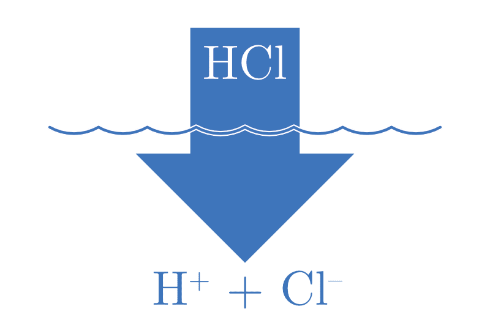
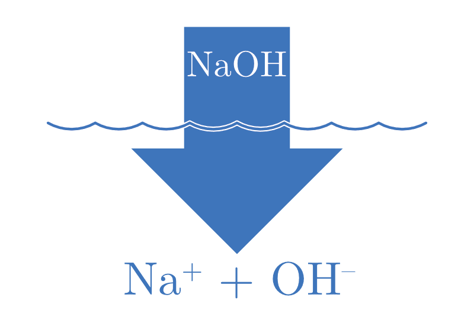
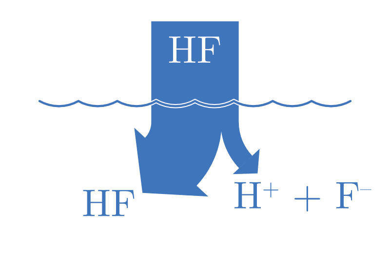
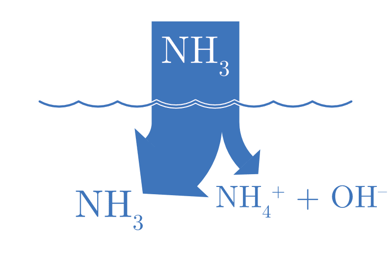
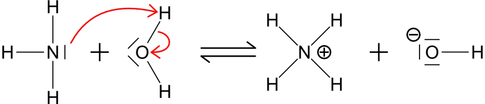

17 Les acides et les bases
- Définir les termes acide et base selon Arrhénius, Brønsted-Lowry et Lewis.
- Définir le concept d’acides, bases et leurs conjugués.
- Expliquer la notion de forces des acides et des bases en termes de dissociation.
- Définir la constante d’acidité Ka et de basicité Kb.
- Expliquer la notion d’autoprotolyse de l’eau et la relation entre |H3O+| et |OH-|.
Autour de nous, des substances présentent des propriétés acides ou basiques. Le citron, le vinaigre, le jus d’agrumes sont acides, tandis que le savon, le bicarbonate de soude, et de nombreux produits de nettoyage sont basiques. Ces propriétés, qui affectent la façon dont une substance interagit avec d’autres, sont déterminées par la présence des ions \(\ce{H}^{+}\) et \(\ce{OH}^{-}\) dans une solution aqueuse.
Dans ce chapitre, nous allons explorer les concepts d’acides et de bases, leurs définitions selon différentes théories, ainsi que la force de ces substances en solution.
17.1 Définitions
| Définition selon | ACIDE | BASE |
|---|---|---|
| Arrhénius | libère des ions H+ en solution | libère des ions OH- en solution |
| Brønsted-Lowry | donneur de H+ | accepteur de H+ |
| Lewis | accepteur d’une paire libre | donneur d’une paire libre |
| Arrhénius | Brønsted-Lowry | Lewis |
|---|---|---|
| \(\ce{HA -> H+ + A-}\) | \(\ce{HCl + NH3 -> NH4+ + Cl-}\) | \(\ce{BF3 +}\)|\(\ce{NH3 -> BF3\bond{<-}NH3}\) |
| acide | ||
| \(\ce{BOH -> OH- + B+}\) | \(\ce{HCl}\) : acide | \(\ce{BF3}\) : acide |
| base | \(\ce{NH3}\) : base | \(\ce{NH3}\) : base |
On considère la réaction \(\ce{HCl + NH3 -> NH4+ + Cl-}\).
- Selon Brønsted-Lowry, identifiez l’acide et la base. Justifiez (donneur ou accepteur de proton).
- Selon Arrhénius, pourquoi \(\ce{HCl}\) est-il un acide ?
- Selon Lewis, une base est un donneur de paire libre. Dans \(\ce{NH3}\), quel atome porte la paire libre qui agit comme base ?
- \(\ce{HCl}\) est l’acide (il donne un proton \(\ce{H}^{+}\)) ; \(\ce{NH3}\) est la base (elle accepte ce proton).
- Selon Arrhénius, \(\ce{HCl}\) est un acide car il libère des ions \(\ce{H}^{+}\) (sous forme de \(\ce{H3O}^{+}\)) en solution aqueuse.
- L’atome d’azote de \(\ce{NH3}\) porte la paire libre (doublet non liant) : selon Lewis, \(\ce{NH3}\) donne cette paire libre pour capter le proton, c’est donc une base.
17.2 Couples acide-base
Un couple acide-base désigne deux espèces chimiques liées par un simple transfert de proton (\(\ce{H}^{+}\)). Ces espèces, l’acide et sa base conjuguée, diffèrent uniquement par la présence ou l’absence de ce proton.
Lors de la réaction entre l’acide chlorhydrique et l’ammoniac :
\[ \ce{HCl_{(aq)} + NH3_{(aq)} <=> NH4^{+}_{(aq)} + Cl^{-}_{(aq)}} \]
- \(\ce{HCl}\) agit comme un acide en donnant un proton à \(\ce{NH3}\),
- \(\ce{NH3}\) agit comme une une base en acceptant un proton de \(\ce{HCl}\).
- \(\ce{HCl}\) est l’acide et \(\ce{Cl}^{-}\) est sa base conjuguée.
- \(\ce{NH3}\) est la base et \(\ce{NH4}^{+}\) est son acide conjugué.
Pour chaque réaction déterminez l’acide, la base, l’acide conjugué et la base conjuguée (selon la définition de Brønsted-Lowry).
- \(\ce{NH3_{(aq)} + H2O_{(l)} <=> NH4^+_{(aq)} + OH^{-}_{(aq)}}\)
- \(\ce{HSO4^{-}_{(aq)} + H2O_{(l)} <=> SO4^{2-}_{(aq)} + H3O^+_{(aq)}}\)
- \(\ce{HF_{(aq)} + H2O_{(l)} <=> F^{-}_{(aq)} + H3O^+_{(aq)}}\)
- \(\ce{PO4^{3-}_{(aq)} + H2O_{(l)} <=> HPO4^{2-}_{(aq)} + OH^{-}_{(aq)}}\) <!–e. \(\ce{HClO_{(aq)} + H2O_{(l)} <=> ClO^{-}_{(aq)} + H3O^+_{(aq)}}\)
- \(\ce{CH3COO^{-}_{(aq)} + H2O_{(l)} <=> CH3COOH_{(aq)} + OH^{-}_{(aq)}}\) –>
- \[ \ce{$\underset{\text{base}}{\ce{NH3_{(aq)}}}$ + $\underset{\text{acide}}{\ce{H2O_{(l)}}}$ <=> $\underset{\text{acide conjugué}}{\ce{NH4^+_{(aq)}}}$ + $\underset{\text{base conjuguée}}{\ce{OH^{-}_{(aq)}}}$} \]
- \[ \ce{$\underset{\text{acide}}{\ce{HSO4^{-}_{(aq)}}}$ + $\underset{\text{base}}{\ce{H2O_{(l)}}}$ <=> $\underset{\text{base conjuguée}}{\ce{SO4^{2-}_{(aq)}}}$ + $\underset{\text{acide conjugué}}{\ce{H3O^+_{(aq)}}}$} \]
- \[ \ce{$\underset{\text{acide}}{\ce{HF_{(aq)}}}$ + $\underset{\text{base}}{\ce{H2O_{(l)}}}$ <=> $\underset{\text{base conjuguée}}{\ce{F^{-}_{(aq)}}}$ + $\underset{\text{acide conjugué}}{\ce{H3O^+_{(aq)}}}$} \]
- \[ \ce{$\underset{\text{base}}{\ce{PO4^{3-}_{(aq)}}}$ + $\underset{\text{acide}}{\ce{H2O_{(l)}}}$ <=> $\underset{\text{acide conjugué}}{\ce{HPO4^{2-}_{(aq)}}}$ + $\underset{\text{base conjuguée}}{\ce{OH^{-}_{(aq)}}}$} \] <!–e. \[ \ce{$\underset{\text{acide}}{\ce{HClO_{(aq)}}}$ + $\underset{\text{base}}{\ce{H2O_{(l)}}}$ <=> $\underset{\text{base conjuguée}}{\ce{ClO^{-}_{(aq)}}}$ + $\underset{\text{acide conjugué}}{\ce{H3O^+_{(aq)}}}$} \]
- \[ \ce{$\underset{\text{base}}{\ce{CH3COO^{-}_{(aq)}}}$ + $\underset{\text{acide}}{\ce{H2O_{(l)}}}$ <=> $\underset{\text{acide conjugué}}{\ce{CH3COOH_{(aq)}}}$ + $\underset{\text{base conjuguée}}{\ce{OH^{-}_{(aq)}}}$} \]–>
Pour chaque espèce chimique suivante, écrivez la formule de son acide ou de sa base conjuguée, selon le cas.
- Base conjuguée de \(\ce{HCN}\)
- Acide conjugué de \(\ce{SO3}^{2-}\)
- Base conjuguée de \(\ce{H3PO4}\)
- Acide conjugué de \(\ce{C2H5NH2}\)
- Base conjuguée de \(\ce{HNO2}\)
- Acide conjugué de \(\ce{Br}^{-}\)
- \(\ce{CN}^{-}\)
- \(\ce{HSO3}^{-}\)
- \(\ce{H2PO4}^{-}\)
- \(\ce{C2H5NH3}^{+}\)
- \(\ce{NO2}^{-}\)
- \(\ce{HBr}\)
17.3 Les ampholytes
Un ampholyte, ou une espèce amphotère, est une molécule ou un ion capable de réagir à la fois comme un acide et comme une base (donner ou accepter un proton), selon les conditions du milieu réactionnel. L’eau est l’exemple le plus courant et le plus accessible pour illustrer ce concept.
En présence d’un acide plus fort, l’eau agit comme une base, acceptant un proton pour former l’ion hydronium (\(\ce{H3O}^{+}\)).
\[ \ce{H2O_{(l)} + HCl_{(aq)} <=> H3O^{+}_{(aq)} + Cl^{-}_{(aq)}} \]
Inversement, en présence d’une base plus forte, l’eau agit comme un acide, cédant un proton pour former l’ion hydroxyde (\(\ce{OH}^{-}\)).
\[ \ce{H2O_{(l)} + NH3_{(aq)} <=> OH^{-}_{(aq)} + NH4^{+}_{(aq)}} \]
Donnez les équations montrant la nature acide et la nature basique de l’ion hydrogénosulfate (\(\ce{HSO4}^{-}\)).
\[ \begin{split} \ce{$\underset{\text{acide}}{\ce{HSO4}^{-}}$ + H2O <=> SO4^{2-} + H3O+} \\ \ce{$\underset{\text{base}}{\ce{HSO4}^{-}}$ + H2O <=> H2SO4 + OH-} \\ \end{split} \]
Écrivez l’équation de la réaction d’autoprotolyse de l’eau, où une molécule d’eau réagit avec une autre.
\[ \ce{2 H2O_{(l)} <=> H3O^{+}_{(aq)} + OH^{-}_{(aq)}} \]
Dans cette réaction, une molécule d’eau cède un proton (agissant comme un acide de Brønsted-Lowry) et l’autre accepte ce proton (agissant comme une base de Brønsted-Lowry).
17.4 Forces des acides et des bases
- Un acide ou une base sera fort(e) s’il s’ionise (se dissocie) complètement.
- Un acide ou une base sera faible s’il ne s’ionise (se dissocie) que partiellement.
17.5 Acides et bases fort(e)s
| ACIDE FORT | BASE FORTE |
|---|---|
| \(\ce{HA_{(aq)} + H2O_{(l)} -> H3O^{+}_{(aq)} + A^{-}_{(aq)}}\) | \(\ce{B_{(aq)} + H2O_{(l)} -> BH^{+}_{(aq)} + OH^{-}_{(aq)}}\) |
 |
 |
| |H3O+| = |HA| | |OH-| = |B| |
17.6 Acides et bases faibles
| ACIDE FAIBLE | BASE FAIBLE |
|---|---|
| \(\ce{HA_{(aq)} + H2O_{(l)} <=> H3O^{+}_{(aq)} + A^{-}_{(aq)}}\) | \(\ce{B_{(aq)} + H2O_{(l)} <=> BH^{+}_{(aq)} + OH^{-}_{(aq)}}\) |
 |
 |
| |H3O+| \(\lll\) |HA| | |OH-| \(\lll\) |B| |
Plus un acide est fort, plus sa base conjuguée sera faible et vice versa.
Dans le cas d’un acide fort, complètement dissocié, sa base conjuguée est dite inerte, elle ne modifiera pas le pH.
De nombreuses bases faibles contiennent un atome d’azote puisque la paire libre peut agir comme un accepteur de proton.

| Nom | Amine | Forme protonnée | Exemple de sel |
|---|---|---|---|
| ammoniac | \(\ce{NH3}\) | \(\ce{NH4^+}\) | \(\ce{NH4Cl}\) |
| méthylamine | \(\ce{CH3NH2}\) | \(\ce{CH3NH3^+}\) | \(\ce{CH3NH3Cl}\) |
| éthylamine | \(\ce{CH3CH2NH2}\) | \(\ce{CH3CH2NH3^+}\) | \(\ce{CH3CH2NH3Cl}\) |
| phénylamine | \(\ce{C6H5NH2}\) | \(\ce{C6H5NH3^+}\) | \(\ce{C6H5NH3Cl}\) |
| diméthylamine | \(\ce{(CH3)2NH}\) | \(\ce{(CH3)2NH2^+}\) | \(\ce{(CH3)2NH2Cl}\) |
| diéthylamine | \(\ce{(CH3CH2)2NH}\) | \(\ce{(CH3CH2)2NH2^+}\) | \(\ce{(CH3CH2)2NH2Cl}\) |
17.7 Constante d’acidité Ka et constante de basicité Kb
Considérons l’équation générique d’ionisation d’un acide faible :
\[ \ce{HA_{(aq)} + H2O_{(l)} <=> H3O^{+}_{(aq)} + A^{-}_{(aq)}} \]
La constante d’équilibre de cette réaction s’exprime par la relation suivante :
\[ K_a = \frac{|\ce{H3O}^{+}| \cdot |\ce{A}^{-}|}{|\ce{HA}|} = \frac{|\ce{H}^{+}| \cdot |\ce{A}^{-}|}{|\ce{HA}|} \]
Dans le cas des acides faibles, cette constante est appelée constante d’acidité (Ka) et donne une valeur à la force de ces acides.
Plus la constante est petite, plus l’équilibre est déplacé vers la gauche et plus l’acide est faible.
Considérons l’équation générique d’ionisation d’une base faible :
\[ \ce{B_{(aq)} + H2O_{(l)} <=> BH^{+}_{(aq)} + OH^{-}_{(aq)}} \]
La constante d’équilibre de cette réaction s’exprime par la relation suivante :
\[ K_b = \frac{|\ce{BH}^{+}| \cdot |\ce{OH}^{-}|}{|\ce{B}|} \]
Cette constante est appelée constante de basicité (Kb) et donne une valeur à la force des bases faibles.
Plus la constante est petite, plus l’équilibre est déplacé vers la gauche et plus la base est faible.
Les valeurs numériques des constantes d’acidité (Ka) et de basicité (Kb) pour de nombreux acides et bases courants sont généralement compilées et présentées dans des tables de données de référence.
Déterminez si chacun des composés ci-dessous est un acide ou une base fort(e) ou faible. Pour les acides ou les bases faibles, donnez également l’expression de la constante d’acidité (Ka) ou de basicité (Kb) :
- \(\ce{HI}\)
- \(\ce{NaOH}\)
- \(\ce{HF}\)
- \(\ce{NH3}\)
- \(\ce{H2SO4}\)
- \(\ce{HSO4}^{-}\)
- \(\ce{C5H5N}\) (pyridine)
- \(\ce{HI}\) : acide fort
- \(\ce{NaOH}\) : base forte
- \(\ce{HF}\) : acide faible ; \(K_a = \frac{|\ce{F}^{-}| \cdot |\ce{H3O}^{+}|}{|\ce{HF}|}\)
- \(\ce{NH3}\) : base faible ; \(K_b = \frac{|\ce{NH4}^{+}| \cdot |\ce{OH}^{-}|}{|\ce{NH3}|}\)
- \(\ce{H2SO4}\) : acide fort (pour la première déprotonation)
- \(\ce{HSO4}^{-}\) : acide faible ; \(K_a = \frac{|\ce{SO4}^{2-}| \cdot |\ce{H3O}^{+}|}{|\ce{HSO4}^{-}|}\)
- \(\ce{C5H5N}\) : base faible ; \(K_b = \frac{|\ce{C5H5NH}^{+}| \cdot |\ce{OH}^{-}|}{|\ce{C5H5N}|}\)
En vous basant sur la force relative des acides, classez les solutions suivantes par ordre de force d’acidité croissante.
- Acide nitrique 0.1 M
- Acide fluorhydrique 0.1 M
- Acide formique 0.1 M
- Acide hypochloreux 0.1 M
- Acide hypochloreux (\(\ce{HClO}\)) : \(K_a = 3.63 \cdot 10^{-8}\)
- Acide formique (\(\ce{HCOOH}\)) : \(K_a = 1.78 \cdot 10^{-4}\)
- Acide fluorhydrique (\(\ce{HF}\)) : \(K_a = 6.76 \cdot 10^{-4}\)
- Acide nitrique (\(\ce{HNO3}\)) : Acide fort (Ka >> 1)
\[\ce{HClO} < \ce{HCOOH} < \ce{HF} < \ce{HNO3}\]
En vous basant sur la force des acides conjugués, déterminez quelle est la base la plus forte dans chacune des paires suivantes :
- \(\ce{CH3COO}^{-}\) et \(\ce{HCOO}^{-}\)
- \(\ce{SO4}^{2-}\) et \(\ce{ClO4}^{-}\)
- \(\ce{PO4}^{3-}\) et \(\ce{CO3}^{2-}\)
- \(\ce{I}^{-}\) et \(\ce{Cl}^{-}\)
Rappel : plus l’acide conjugué est faible, plus la base est forte.
- \(\ce{CH3COO}^{-}\) et \(\ce{HCOO}^{-}\) : \(\ce{CH3COO}^{-}\) est la base la plus forte (\(K_a(\ce{CH3COOH}) < K_a(\ce{HCOOH})\)).
- \(\ce{SO4}^{2-}\) et \(\ce{ClO4}^{-}\) : \(\ce{SO4}^{2-}\) est la base la plus forte (\(\ce{ClO4}^{-}\) est la base conjuguée d’un acide fort, elle est donc inerte).
- \(\ce{PO4}^{3-}\) et \(\ce{CO3}^{2-}\) : \(\ce{PO4}^{3-}\) est la base la plus forte (\(K_a(\ce{HPO4}^{2-}) < K_a(\ce{HCO3}^{-})\)).
- \(\ce{I}^{-}\) et \(\ce{Cl}^{-}\) : les deux sont des bases inertes (spectateurs), car leurs acides conjugués \(\ce{HI}\) et \(\ce{HCl}\) sont des acides forts.
17.8 Autoprotolyse de l’eau
L’eau est une molécule amphotère, elle peut jouer à la fois le rôle d’acide et de base. Dans de l’eau pure, deux molécules d’eau peuvent réagir entre-elles, l’une agissant comme un acide et l’autre comme une base :
\[ \ce{H2O_{(l)} + H2O_{(l)} <=> H3O+_{(aq)} + OH^{-}_{(aq)}} \]
Cette réaction est appelée autoprotolyse. C’est réaction est réversible, on peut en exprimer la constante d’équilibre Ke, appelée produit ionique de l’eau :
\[ K_e = |\ce{H3O}^{+}| \cdot |\ce{OH}^{-}| = 10^{-14} \quad \text{(valeur à 25°C)} \]
Cette relation relie les concentrations des ions H3O+ et OH- dans toutes les solutions aqueuses. Elle permet également de calculer la concentration des ions H3O+ dans une solution basique, car :
\[ |\ce{H3O}^{+}| = \frac{10^{-14}}{|\ce{OH}^{-}|} \]
En résumé :
| Dans de l’eau pure | |\(\ce{H3O}^{+}\)| = |\(\ce{OH}^{-}\)| = \(10^{-7} M\) |
| Dans une solution acide | |\(\ce{H3O}^{+}\)| > |\(\ce{OH}^{-}\)| |
| Dans une solution basique | |\(\ce{H3O}^{+}\)| < |\(\ce{OH}^{-}\)| |
- Quelle est la concentration en ions \(\ce{H3O}^{+}\) dans une solution d’acide perchlorique (\(\ce{HClO4}\)) de 0.025 mol/L ?
- Comment cette concentration varie-t-elle dans une solution d’acide hypochloreux (\(\ce{HClO}\)) de 0.025 mol/L ? (une réponse qualitative est attendue)
- L’acide perchlorique (\(\ce{HClO4}\)) est un acide fort. Il se dissocie donc complètement en solution. La concentration en ions \(\ce{H3O}^{+}\) est égale à la concentration initiale de l’acide. \[ |\ce{H3O}^{+}| = 0.025\text{ M} \]
- L’acide hypochloreux (\(\ce{HClO}\)) est un acide faible. Il ne se dissocie que partiellement. Par conséquent, la concentration en ions \(\ce{H3O}^{+}\) sera inférieure à la concentration initiale de l’acide. \[ |\ce{H3O}^{+}| < 0.025\text{ M} \]
En considérant que les deux protons de l’acide sulfurique sont entièrement dissociés, quelle est la concentration des H3O+ et de OH- dans une solution d’acide sulfurique 0.005 M.
\[ \begin{split} \ce{H2SO4 + 2 H2O <=> 2 H3O+ + SO4^{2-}} \end{split} \qquad \begin{split} C_{initial}^{\ce{H2SO4}} &= 0.005\ M \\[1em] C_{final}^{\ce{H2SO4}} &= 0\ M \end{split} \qquad \begin{split} C_{initial}^{\ce{H3O}^{+}} &= 0\ M \\[1em] C_{final}^{\ce{H3O}^{+}} &= 0.010\ M \end{split} \] \[ \begin{split} |\ce{H3O}^{+}| = 10^{-2}\ M \end{split} \quad \text{et} \quad \begin{split} |\ce{OH}^{-}| = \frac{10^{-14}}{10^{-2}} = 10^{-12}\ M \end{split} \]
Calculez la concentration des ions H3O+ dans une solution de LiOH 0.025 M.
\[ \begin{split} &|\ce{OH}^{-}| = 0.025\ M \\ &\text{LiOH est une base forte.} \end{split} \qquad \begin{split} |\ce{H3O}^{+}| = \frac{K_e}{|\ce{OH}^{-}|} = \frac{10^{-14}}{0.025} = 4 \cdot 10^{-13} M \end{split} \]
17.9 Résumé
- Trois définitions des acides et des bases. Selon Arrhénius : un acide libère des ions \(\ce{H}^{+}\), une base des ions \(\ce{OH}^{-}\) en solution. Selon Brønsted-Lowry : un acide est un donneur de proton, une base un accepteur de proton. Selon Lewis : un acide est un accepteur de paire libre, une base un donneur de paire libre.
- Un couple acide-base est formé d’un acide et de sa base conjuguée, qui ne diffèrent que d’un proton \(\ce{H}^{+}\). Une espèce amphotère (ampholyte), comme l’eau, peut se comporter en acide ou en base selon le milieu.
- Un acide (ou une base) est fort s’il se dissocie complètement, faible s’il ne se dissocie que partiellement. Plus un acide est fort, plus sa base conjuguée est faible ; la base conjuguée d’un acide fort est inerte.
- La force d’un acide faible se mesure par la constante d’acidité \(K_a\), celle d’une base faible par la constante de basicité \(K_b\). Plus la constante est petite, plus l’acide (ou la base) est faible.
- L’eau subit une autoprotolyse : \(\ce{2 H2O <=> H3O+ + OH-}\), de constante \(K_e = |\ce{H3O}^{+}| \cdot |\ce{OH}^{-}| = 10^{-14}\) à 25°C. Dans l’eau pure \(|\ce{H3O}^{+}| = |\ce{OH}^{-}| = 10^{-7}\) M.
17.10 Exercices supplémentaires
L’ion dihydrogénophosphate \(\ce{H2PO4}^{-}\) est amphotère.
- Écrivez l’équation où \(\ce{H2PO4}^{-}\) se comporte comme un acide (avec l’eau) et donnez sa base conjuguée.
- Écrivez l’équation où \(\ce{H2PO4}^{-}\) se comporte comme une base (avec l’eau) et donnez son acide conjugué.
- Donnez l’expression de la constante d’acidité \(K_a\) et de la constante de basicité \(K_b\) correspondant à ces deux réactions.
- Comme acide : \(\ce{H2PO4- + H2O <=> HPO4^{2-} + H3O+}\). Base conjuguée : \(\ce{HPO4}^{2-}\).
- Comme base : \(\ce{H2PO4- + H2O <=> H3PO4 + OH-}\). Acide conjugué : \(\ce{H3PO4}\).
- \[ K_a = \frac{|\ce{HPO4}^{2-}| \cdot |\ce{H3O}^{+}|}{|\ce{H2PO4}^{-}|} \qquad K_b = \frac{|\ce{H3PO4}| \cdot |\ce{OH}^{-}|}{|\ce{H2PO4}^{-}|} \]
On donne les constantes d’acidité : acide acétique \(\ce{CH3COOH}\) (\(K_a = 1.8\cdot10^{-5}\)), acide fluorhydrique \(\ce{HF}\) (\(K_a = 6.8\cdot10^{-4}\)), acide cyanhydrique \(\ce{HCN}\) (\(K_a = 6.2\cdot10^{-10}\)).
- Classez ces trois acides du plus faible au plus fort.
- Classez leurs bases conjuguées de la plus faible à la plus forte.
- Parmi ces acides, lequel se dissocie le plus en solution ? Justifiez.
- Plus \(K_a\) est petit, plus l’acide est faible : \[ \ce{HCN} < \ce{CH3COOH} < \ce{HF} \]
- Plus un acide est fort, plus sa base conjuguée est faible. Des bases conjuguées de la plus faible à la plus forte : \[ \ce{F}^{-} < \ce{CH3COO}^{-} < \ce{CN}^{-} \]
- L’acide fluorhydrique \(\ce{HF}\) : il possède le plus grand \(K_a\), son équilibre de dissociation est le plus déplacé vers la droite, il se dissocie donc le plus.
On rappelle qu’à 25°C, \(|\ce{H3O}^{+}| \cdot |\ce{OH}^{-}| = 10^{-14}\). Pour chacune des solutions suivantes, calculez la concentration manquante (\(|\ce{H3O}^{+}|\) ou \(|\ce{OH}^{-}|\)) et indiquez si la solution est acide, neutre ou basique.
- \(|\ce{H3O}^{+}| = 10^{-3}\) M
- \(|\ce{OH}^{-}| = 10^{-5}\) M
- \(|\ce{H3O}^{+}| = 10^{-7}\) M
- \(|\ce{OH}^{-}| = \dfrac{10^{-14}}{10^{-3}} = 10^{-11}\) M. Comme \(|\ce{H3O}^{+}| > |\ce{OH}^{-}|\), la solution est acide.
- \(|\ce{H3O}^{+}| = \dfrac{10^{-14}}{10^{-5}} = 10^{-9}\) M. Comme \(|\ce{H3O}^{+}| < |\ce{OH}^{-}|\), la solution est basique.
- \(|\ce{OH}^{-}| = \dfrac{10^{-14}}{10^{-7}} = 10^{-7}\) M. Comme \(|\ce{H3O}^{+}| = |\ce{OH}^{-}|\), la solution est neutre.